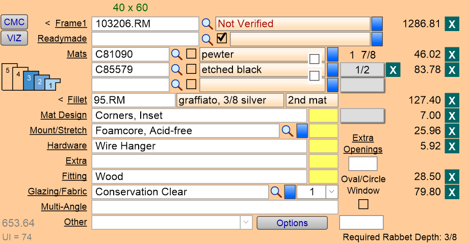
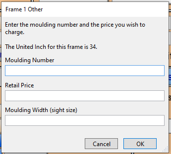
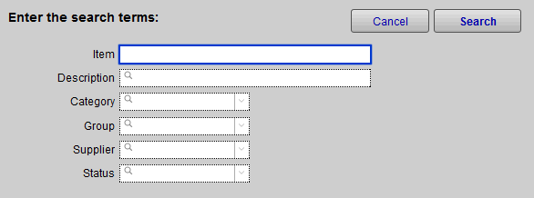

Framing Components Section
The components of the framing job are entered into this section of the Work Order.
-
Bottom-left quadrant of screen
Framing Materials Section Explained

-
In this section of the Work Order file, you enter the details for the components used in your order.
-
Ensuring accurate entry and details is easy with expandable windows containing full details for each component.
1) CMC Button
-
The CMC field displays the computerized matboard cutter design name you have selected using the CMC button. The Price associated with this design will be displayed on the line for Mat Design.
-
Click to launch your CMC software program of choice.
-
To select your CMC, choose Main Menu > Work Order > Options tab.
2) VIZ Button
-
Click to launch your Visualization program of choice. You set the defaults within the Work Order Defaults.
-
When done, you may click the Back To POS button and the frame dimensions will be loaded into your current Work Order.
3) Frame1 Field
-
The moulding you wish to enter can be typed or scanned directly into the Frame1 field.
-
The underlined word Frame1 is a button which will take you to another screen with details and pricing for this item.
-
Any underlined label can access a details screen to allow for multiple entries. In the case of stacked frames, the frame closest to the image will be displayed on this screen, however, the price on the screen will reflect the total of all frames in the layered frames button icon on the left hand side. The Description field will display any description provided by the supplier.
-
Use the magnifying glass to locate a moulding by entering the first 3 to 4 digits or a description (e.g. matte black) or the group to which it belongs (e.g. wood). The more criteria entered into the search, the narrower the search will be (e.g. Item: 11, Group: Metal). Click OK.
-
Click the blue Override button to access a screen where you can enter a Moulding Number and Retail Price for the entire frame. Use this when the sample has not yet been entered into the Price Codes file.
-
How to Price Layered or Stacked Frames and Fillets
4) Readymade Field
-
Entering in a product number here will list the readymade frame your shop has created previously that will be used in this order.
5) Mats Fields
-
FrameReady defaults to three mat options. To add more, click the underlined Mats link to add fillets and manage additional mat options.
-
If a matboard has a status of Not Verified or Discontinued, then the status appears in the Description field.
-
To signify a reverse bevel cut, use the checkbox to the right of the Mats field.
-
To indicate where a spacer should be placed between sheets of matboard, use the checkbox to the right of the Description field. The cost for the spacer will not be automatically applied when the box is marked; instead select a price to be applied from one of the pop-up menus, i.e. Extras.
-
The number at the end of the Mat row displays the matboard measure of the selected top mat. The reveal amounts for second and subsequent mats are deducted from the top mat measurement. When more than one mat is entered, the top mat measurement can be increased, thereby increasing the total matboard measurements, by using the Adjust Margins of top mat button (accessed by Mats or Fillet detail screens).
-
The grey boxes underneath show the matboard reveals. Click to reveal a pop-up menu and select how much of the underlying matboard should be revealed. Items can be added to or deleted from the menu using the Edit List button (bottom).
-
To enter a one-time entry, click the Other Value button.
-
Additionally, a default amount can be set for all seven matboards. See: Set up Size Defaults for Mat Reveals
6) Fillet Field
-
Lists the fillet used with the mats in this order. Clicking this will bring up the fillet details menu and allow you to place the fillet against the appropriate mat.
-
The entry in this field indicates the Fillet placement in a mat, as opposed to in a frame (treated as a layered moulding). If more than one fillet is placed between the matboards, only the first entry will appear on the work order screen. All placements will appear in the matboard section on the printed work order. When an item in fabric group is entered, enter Fabric under reveals pop-up menu. Use the Design Placement field to indicate how far from the matboard opening the design will be positioned (e.g. v-groove, french line). A pop-up menu is provided.
7) Mat Design Field
-
Used to give more options than a basic square cut in the mat, you will also be able to connect to your mat cutting software to detail out the exact cut you prefer.
8) Mount/Stretch Field
-
Created within the Price Codes file, these mounting options will be listed in a drop down menu.
-
If you enter a mat into the Mount/Stretch field, and if the matboard has a status of Not Verified or Discontinued, then the status appears in the Description field.
9) Hardware Field
-
Created within the Price Codes file, these hardware options will be listed in a drop down menu.
10) Extra Openings Field
-
FrameReady assumes one mat opening or window. Enter the number of extra windows which will be added to the design here.
-
The price is calculated based on the retail price per opening set in the Price Codes file and appears on the Work Order screen beside Mat Design.
-
Click the text button Extra Openings to access the Mat Design screen where the price of the Extra Openings can be changed for this one Work Order only.
-
To change the default, go to the Main Menu > Work Order section > Options Tab > More Options… > Work Order Defaults Tab > Price per extra window opening. See: Set up Work Order Default Options
11) Extra Field
-
Created within the Price Codes file, these extra options will be listed in a drop down menu.
12) Fitting Field
-
Created within the Price Codes file, these fitting options will be listed in a drop down menu.
13) Glazing/ Fabric Field
-
Select the glazing or fabric needs for your customer.
14) Multi-Angle Field
-
Calculates a charge to cover the additional time needed to create a multi-angled frame; the more complex the higher the percentage. Click on the field to bring up the established values from the Price Codes file.
15) Other Field
-
Intended for pricing on the fly. When you need to add an extra item to a Work Order that is one of a kind or single use, you have the option to add with the drop down list or on the menu screen. You'll need to manually add in pricing for this item.
-
The Other field contains a drop-down list of items which are not priced by the size of the frame but by other factors, e.g. distance, labor required, etc. Items can be selected from the arrow or entered manually by clicking into the field. To add an item to the permanent list > Edit…
-
When the Constrain to 1 field is marked, the amount in the Other Price field is not affected by multiple orders and the price will appear separately in the Pricing section beside Other.
-
Use the Other price field to enter the retail price of the item shown in the Other field. No dollar sign is necessary. This is useful for one time fees on duplicate orders (e.g. shipping, or setup fee for multiple orders). When you click on Other it features a calculation engine that can be used to price out other items that can’t be easily entered into any of the other work fields. Things like: 3D plexi box; multiple fillets in a multiple opening mat; printing of artwork; restoration charges.
Other Important Information in the Framing Components Section
There are four important numbers listed in this section of the Work Order. Each number is effected by the components you add to the order and cannot be changed on their own.
Suggested Lite Size
-
The green numbers at the very top are the suggested lite size for the glazing most suitable for the piece you are framing based on the dimensions you carry. The only place you may default these lite sizes in the Main Menu > Work Order > Options Tab > Work Order Defaults Tab.
-
Listed directly above the Frame1 field, the suggested lite size will be the best size sheet of glazing based on the dimensions that you carry. You can edit these options here: Set up Work Order Default Options
UI
-
In the bottom left of the framing components section is the United Inches for the current framing order based on all of the listed components.
-
The wholesale cost of the materials (COG) you have invested in this project is discreetly displayed underneath the UI.
-
Cost is determined by the cost amount entered in the Price Codes file. The cost field must have an amount in order for the program to calculate this value. The waste factor entered in the Work Order Options > More Options….> General tab is included. This field is masked when logged in under the level1 account.
Wholesale Cost
-
The wholesale cost of the materials you have invested in this project is discreetly displayed in the bottom left corner over the UI. Cost is determined by the cost amount entered in the Price Codes file. The cost field must have an amount in order for the program to calculate this value. The waste factor entered in the Work Order Options is included.
Rabbet Depth
-
This is the required rabbet depth for the current order including all of the components that have been entered into the fields. If there is an indication that the rabbet depth will not contain all of the components needed for the Work Order, then an error message will show in the center Message/Alert section of the Work Order.
-
In order to function properly, rabbet depth must be entered for frames and width must be entered for materials.
-
Normally vendors do not supply this information to Adatasol. You may wish to enter rabbet depths for your samples in the Price Codes file.
Magnifying Glass Button
-
Click to find the correct component you would like to add in each field.
Description Field
-
This is a field that will automatically fill after you enter the item number for the component. You cannot edit the contents of this field from the Work Orders, it can only be edited from the Price Codes. This description is provided by the vendors and will be updated with the updates from the vendor.
Blue Override Button
-
Click the blue Override button to manually enter in pricing. This is good for creating new components on the fly.

Yellow Box
-
This important field will allow you to apply multiple quantities to your components. Some parts of a frame will be multiples of the same component and this will ensure that you charge your customers appropriately.
Price Column
-
Displays the price of all the materials entered on the Work Order.
-
If more than one item is entered for each component, then the price displayed is the total of all entries, i.e. for Hardware: the combined price of wire and turn buttons will be displayed if they have been entered on the detail screen
How to Enter Information into the Framing Components Section
-
All of the fields within this section of the Work Order will allow you to manually type in the information that matches what the Work Order requires.
-
It will find the appropriate components within the Price Codes file and add in the pricing.
-
You can also use the search command next to the components by clicking the Magnifying Glass beside the field when applicable.

-
When you do not have the item number, this method of search can help you narrow down which specific component you are looking for.
-
Use as many or as few terms as you have in order to reveal the potential item numbers for the component you are searching for.
Important Note: The only field with a different search screen is the Readymade field. Review the Readymade Overview page for details about this search.
What to Review Next?
Once you understand how each section within the Work Orders works, you'll want to continue learning. Here are few recommended articles that will help you expand your knowledge.
-
Understanding How and Why to do Price Overrides
© 2023 Adatasol, Inc.